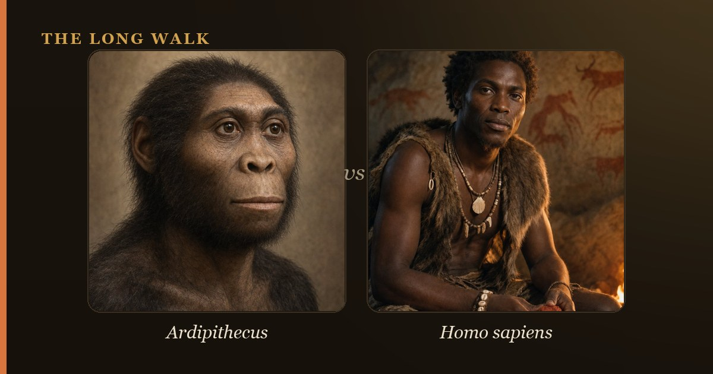

Humans did not evolve from modern apes like chimpanzees. Instead, humans and apes both evolved from a common ancestor that lived 6–8 million years ago. Taxonomically, humans ARE members of the ape family (Hominidae)—we are one branch of a branching evolutionary tree, not the ladder's final rung.

When people ask "Did humans evolve from apes?" they usually mean: "Are modern humans descended from modern chimpanzees or gorillas?" The answer is definitively no. But that simple answer masks a subtler truth that is genuinely surprising once you understand it. Humans are apes, taxonomically speaking. We belong to the family Hominidae, alongside chimpanzees, bonobos, gorillas, and orangutans. What we did not do was evolve from any of the living apes we see today.
The confusion stems partly from how evolution is taught in popular culture. Many people imagine evolution as a ladder, with fish at the bottom, then amphibians, reptiles, mammals, primates, apes, and finally humans at the top. This "March of Progress" idea is comforting—it suggests humans are the pinnacle—but it is fundamentally misleading. Evolution is not a ladder; it is a branching tree. Modern chimpanzees are not an older version of humans or a stepping stone on our path. Chimpanzees have been evolving for millions of years since we diverged from a common ancestor, just as humans have.
| At a glance | Monkeys | Great apes (incl. humans) |
|---|---|---|
| Tail present? | Yes, usually prominent | No tail (vestigial tailbone only) |
| How many living species in this group? | ~350 species of Old World & New World monkeys | 7 species: humans, chimps, bonobos, gorillas, 3 orangutan species |
| Last shared ancestor with humans | ~25–30 million years ago | Varies: chimps & bonobos ~6–8 million years ago; gorillas ~9–10 million years ago |
| DNA shared with humans | ~92–95% identical | Chimps & bonobos ~98.8%; gorillas ~98.3%; orangutans ~97.0% |
| Are they our direct ancestors? | No—we share a distant ancestor millions of years in the past | No—we share a recent common ancestor; we are evolutionary cousins |
| Same family as humans? | No; monkeys are in family Cercopithecidae (Old World) or Cebidae (New World) | Yes; all great apes in family Hominidae |
| Can produce fertile hybrid with humans? | No | Theoretically possible in some cases (chimps, gorillas) but extremely rare & never naturally observed |
Are Humans Actually Apes?
Yes. This is not a metaphor or a judgment; it is a biological classification. Taxonomy—the science of organizing living things—groups organisms by shared ancestry. The family Hominidae includes humans, chimpanzees, bonobos, gorillas, and orangutans. If you share a recent common ancestor with another animal, you are in the same family.
By this definition, you are an ape. Your children are apes. Your cousins are apes. This might feel strange, but it reflects millions of years of shared evolutionary history. When scientists say "humans are apes," they mean we are part of the same clade—a group of organisms descended from a common ancestor. We inherited traits from that ancestor, such as the loss of a tail, five fingers and toes, and complex social behavior.
We Did Not Descend From Chimpanzees
Here is the key distinction: humans did not descend from chimpanzees, and chimpanzees did not descend from humans. Instead, both humans and chimpanzees descended from a common ancestor. Genetic evidence suggests this last common ancestor lived somewhere between 6 and 8 million years ago. That ancestor was neither a modern human nor a modern chimpanzee; it was a distinct species that has no living descendants today except through the lineages that gave rise to both humans and chimps.
We share approximately 98.8 percent of our DNA with chimpanzees, which means we differ in only about 1.2 percent of our genetic code. This high degree of genetic similarity reflects our close relationship and recent divergence. But that 1.2 percent difference is real and significant—it includes genes that regulate brain development, speech, bipedalism, and dozens of other traits that make humans behaviorally and physically distinct.
What About Monkeys? Did We Evolve From Them?
Monkeys, like apes, are primates. But the last common ancestor of humans and monkeys lived much further back in time—roughly 25 to 30 million years ago. By the time that ancestral species lived, it was already neither a monkey nor an ape in the modern sense, though it possessed traits that both lineages would inherit and modify.
So the answer to "Did we evolve from monkeys?" is also no—we did not evolve from any living monkey species. We share a distant ancestor with them, more remote than our relationship with apes but still recent enough that we carry homologous structures: similar bones in our hands and feet, similar brain architecture, and similar DNA sequences.
The Family Bush, Not a Ladder
The misleading "March of Progress" image shows a linear sequence: fish, amphibian, reptile, mammal, monkey, ape, human. It implies that each stage was inferior and that humans represent the goal or the summit of evolution. This is incorrect on every count. Evolution has no goal, and there is no summit. Each species alive today—whether fish, monkey, ape, or human—has been evolving for the same amount of time since the origin of life.
A better way to visualize evolution is as a branching tree. The trunk splits into larger branches; those branches split into smaller ones. Modern monkeys occupy some branches; modern apes occupy others. Humans are one small twig on the ape branch. Our branch diverged from the chimpanzee and bonobo branch about 6 to 8 million years ago. We then diverged from the gorilla branch earlier, roughly 9 to 10 million years ago. If you trace back far enough, you reach the common ancestor of all apes, and then the common ancestor of all primates, and eventually the common ancestor of all mammals. But you never reach a point where a human evolves "from" an ape; you reach a point where an ape-like ancestor splits into two lineages, one leading to modern apes and one leading to us.
This distinction matters because it reflects how evolution actually works: through divergence, not ascent. When populations become isolated, they accumulate different mutations and adaptations. Over millions of years, these differences add up until the populations can no longer interbreed. At that point, they are separate species. Neither is "more evolved" than the other; they are simply different.
The Fossils That Tell the Story
The fossil record provides a rich chronicle of human evolution after our split from the chimpanzee lineage. The oldest known hominin—a member of the human family after the split—is Sahelanthropus tchadensis, dating to roughly 7 million years ago. This species walked on two legs (bipedalism) but retained a chimpanzee-sized brain. It lived around the time of the genetic divergence between humans and chimps, and it shows that bipedalism was the first major change in the human lineage, not brain expansion.
Later species include Ardipithecus ramidus (4.4 million years ago), which was fully bipedal and had a smaller brain than later hominins. Then came Australopithecus afarensis, exemplified by the famous skeleton "Lucy," who lived around 3.2 million years ago. Lucy was bipedal but still had a relatively small brain. Her species made simple stone tools. These fossils paint a picture of gradual change: bipedalism first, then tool use, then brain expansion over millions of years.
The genus Homo—our own genus—first appeared around 2.8 to 2.5 million years ago with species like Homo habilis. Later members of our genus, such as Homo erectus and eventually Homo sapiens, show continued brain expansion and increasingly sophisticated tools and behavior. This sequence of hominin fossils does not show humans evolving from chimpanzees; rather, it shows a lineage of increasingly human-like species that diverged from our last common ancestor with chimps millions of years ago.
Why the Confusion Persists
The confusion around human origins stems from several sources. First, popular media often simplifies evolution as "man evolved from ape," which is catchy but wrong. Second, the 19th-century phrase "missing link" suggests a single intermediate form connecting humans and apes, like a rung in a ladder. In fact, there is no single missing link; there is a rich series of transitional fossils showing gradual change over millions of years.
Third, religious and cultural traditions in some communities reject evolution entirely, and some people defend this rejection by attacking the most sensational version of the evolutionary hypothesis—the false claim that humans descended from modern apes. By doing so, they knock down an easy target. The actual scientific claim—that humans and apes are cousins descended from a common ancestor—is more nuanced and harder to dismiss.
Finally, human psychology favors simple hierarchies. We like to place ourselves at the top. The idea that we are one branch of a vast, branching tree, with no privileged place in nature, is unsettling to some. It is easier to imagine a ladder where we stand at the apex than to accept that evolution has no apex, only diversity.
What This Means for Understanding Human Nature
Recognizing that humans are apes, and that we share a common ancestor with chimpanzees and bonobos, transforms how we understand ourselves. It explains why we have opposable thumbs, why we have complex social hierarchies, why we communicate with nuance, and why we are capable of both remarkable empathy and terrible violence. These traits evolved because they conferred advantages in our ancestors' environments.
It also contextualizes our intelligence and language. Humans did not appear fully formed with language and reason. Instead, over millions of years, natural selection shaped our brains and vocal anatomy in ways that eventually made complex language possible. Compared to chimpanzees, we have a larger brain relative to body size, a descended larynx that allows finer vocal control, and neurological structures that support grammar and abstract thought. These differences accumulated gradually.
Understanding our place in nature—not as the apex of creation but as one species among millions, sharing ancestry with our closest living relatives—is both humbling and clarifying. It does not diminish human dignity or potential; it simply locates us in the vast web of life, where we belong.
Follow the branching path from our shared ape ancestors to modern humans on the interactive family tree.
Explore the family tree →Frequently asked questions
Are Humans Actually Apes?
Yes. This is not a metaphor or a judgment; it is a biological classification. Taxonomy—the science of organizing living things—groups organisms by shared ancestry. The family Hominidae includes humans, chimpanzees, bonobos, gorillas, and orangutans.
What About Monkeys? Did We Evolve From Them?
Monkeys, like apes, are primates. But the last common ancestor of humans and monkeys lived much further back in time—roughly 25 to 30 million years ago. By the time that ancestral species lived, it was already neither a monkey nor an ape in the modern sense, though it possessed traits that both lineages would inherit…
- Smithsonian Human Origins — What does it mean to be human? humanorigins.si.edu
- Britannica — Human evolution. britannica.com
- Natural History Museum — Did humans evolve from monkeys? nhm.ac.uk